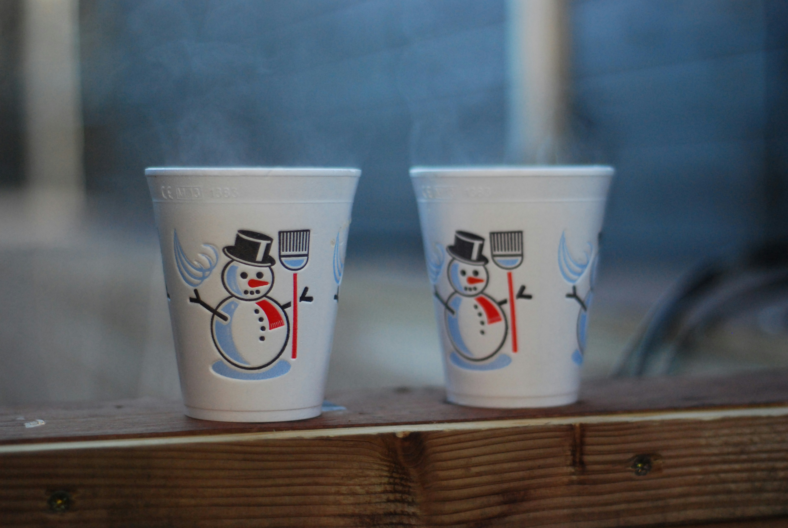
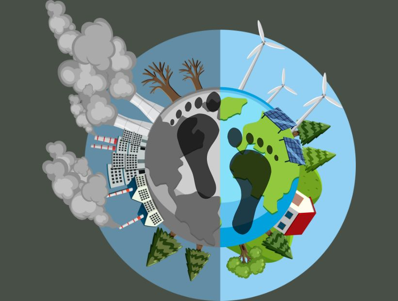

Bienvenido a Vasos y platos sustentables
Esta página tiene como objetivo informar sobre el impacto ambiental de los vasos y platos, así como promover alternativas sustentables y mejores prácticas de consumo.

Esta página tiene como objetivo informar sobre el impacto ambiental de los vasos y platos, así como promover alternativas sustentables y mejores prácticas de consumo.
La sostenibilidad es la capacidad de satisfacer las necesidades actuales sin comprometer los recursos de las futuras generaciones. Esto implica reducir el consumo excesivo, reciclar, reutilizar, y elegir productos que generen un menor impacto ambiental.

Algunos materiales que se consideran sustentables para vasos y platos son:

Los productos desechables generan grandes cantidades de basura que tardan años en degradarse. Además:

Para reducir tu huella ambiental puedes:

La producción de vasos y platos desechables implica emisiones de gases de efecto invernadero. Cada fase del proceso —extracción de materiales, fabricación, transporte y desecho— contribuye al calentamiento global.

Puedes descargar un video sobre sostenibilidad y subirlo como video.mp4.